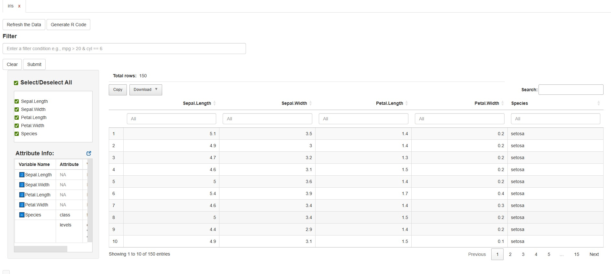
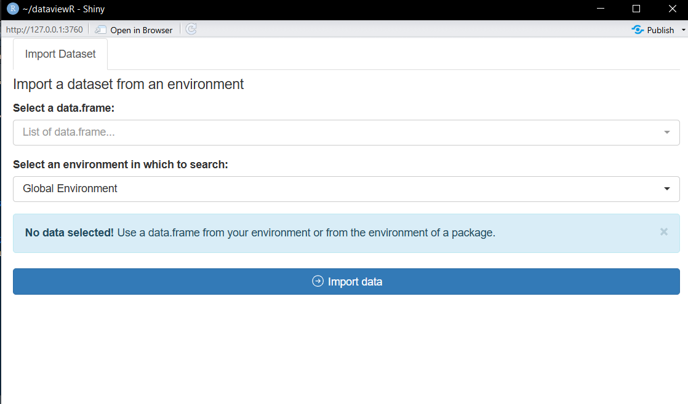

Introduction to dataviewR
Source:vignettes/Introduction-to-dataviewR.Rmd
Introduction-to-dataviewR.RmdIntroduction
dataviewR provides a clean and intuitive Shiny interface
for interactively exploring R data frames and tibbles. Instead of using
the default View() from the utils package or writing
temporary filter code, you can open a dataset visually, browse its
structure, filter rows, inspect values, and export results — all within
seconds. Unlike View(), dataviewR does not dynamically
reflect when the dataset is altered in RStudio after being loaded.
Why dataviewR?
Whether you work in clinical research, data analysis, or academia, a
strong understanding of datasets is important. dataviewR
helps you:
- Inspect datasets interactively within seconds
- View two or more datasets side-by-side
- Review data quality and structure before analysis
While functions like View() offer a quick static
snapshot of a dataset, they are limited when working with large
datasets, inspecting variable values, or applying interactive
filters.
dataviewR offers a flexible, dynamic interface that
enables efficient and intuitive data exploration, whether within the
viewer pane or through a standalone R Shiny application.
dataviewR does not modify any
values/attributes of the dataset(s) passed
This guide walks you through how to launch, navigate, and work with datasets in dataviewR.
For feature-specific articles and examples, visit the Articles section of the documentation.
Launching dataviewR
There are three ways to start the application, depending on your workflow:
1️⃣ Launch with a dataset
When you pass a dataset(s), dataviewR opens directly with that dataset(s) loaded.
For better user experience, it is recommended to open dataviewR in new window from Viewer pane.
To open the dataset in a shiny application, user is requested to
disable the background option using background = FALSE
argument but it keeps the console busy.
library(dataviewR)
dataviewer(iris) # Opens in RStudio Viewer pane or default web browser
dataviewer(iris, background = FALSE) # Opens the Shiny application and run in foreground to enable the "Import Dataset" tab alongside 'iris'You’ll see the interactive table immediately, along with variable info and filtering options.

2️⃣ Launch with multiple datasets (side-by-side viewing)
You can now pass two or more datasets to view them within the same session.
dataviewer(iris, mtcars) # Opens multiple datasets in separate tabsThis is useful for:
Comparing raw vs derived datasets
Inspecting multiple SDTM/ADaM datasets
Reviewing train vs test splits
Comparing outputs across pipelines

Each dataset gets its own tab, allowing you to switch seamlessly.
Please check the Exploring Multiple Datasets article for more examples.
3️⃣ Launch without data (use the Import Panel)
Calling dataviewer() with no arguments opens the Import
Panel in shiny application by default, letting you load the datasets
either from the global environment or from the loaded packages.
Once imported, the viewer opens the selected dataset(s) in separate tab(s).

What Happens Inside the App?
When a dataset is loaded, you can:
✔ Apply flexible row filters (with dplyr style
expressions)
✔ Select or deselect variables and sort columns
✔
See distinct values for character/factor columns (including
NA) in the quick filter box.
✔ View metadata such as
variable classes and attributes
✔ Export filtered data
✔ Copy
auto-generated dplyr code for reproducibility
This helps integrate interactive exploration into a scripted workflow.
Typical Workflow Example
library(dataviewR)
# Explore data interactively
dataviewer(iris)Hover to watch how dataviewR helps you explore a dataset and generate reproducible code.
# After exploring, use the exported code:
library(dplyr)
iris |>
filter(Species == "setosa" & Petal.Width > 0.2) |>
select(Petal.Length, Petal.Width, Species)The combination of interactive exploration + reproducible code makes dataviewR a strong addition to both analysis and QC workflows.
Next Steps
To dive deeper into individual features, see:
- Using Filters and Expressions
- Exploring Multiple Datasets
- Working with Clinical Datasets
- Exporting data and Wrapping Up the Session
All available under the Articles section of the package documentation.
Feedback
If you have suggestions or run into issues, please visit the GitHub repository: https://github.com/madhankumarnagaraji/dataviewR
We welcome ideas, feedback, and contributions.
🏁 That’s It!
You’re ready to start using dataviewR for fast, intuitive, and reproducible data exploration.